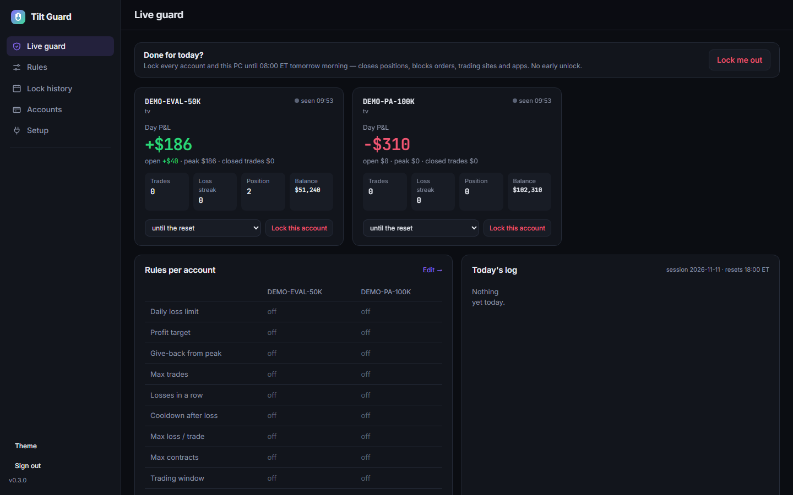
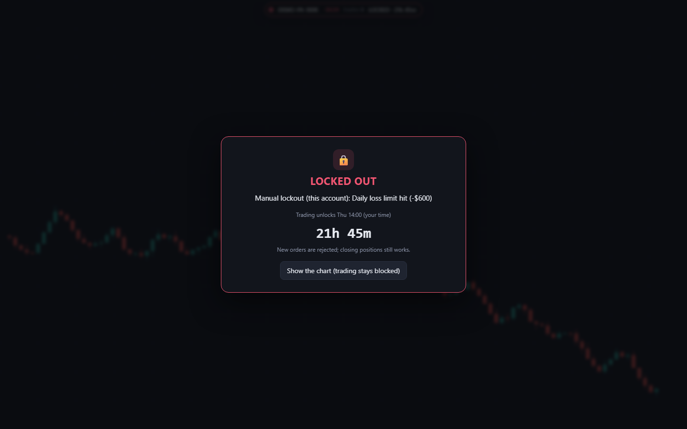
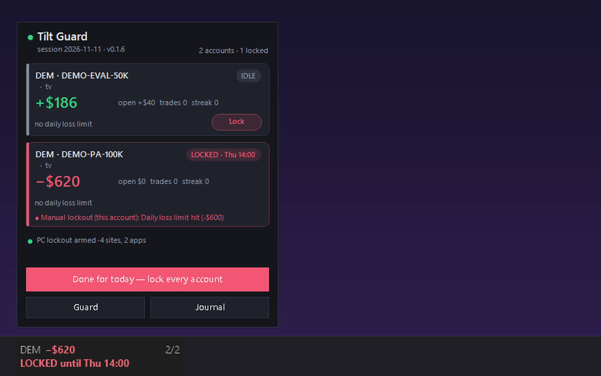
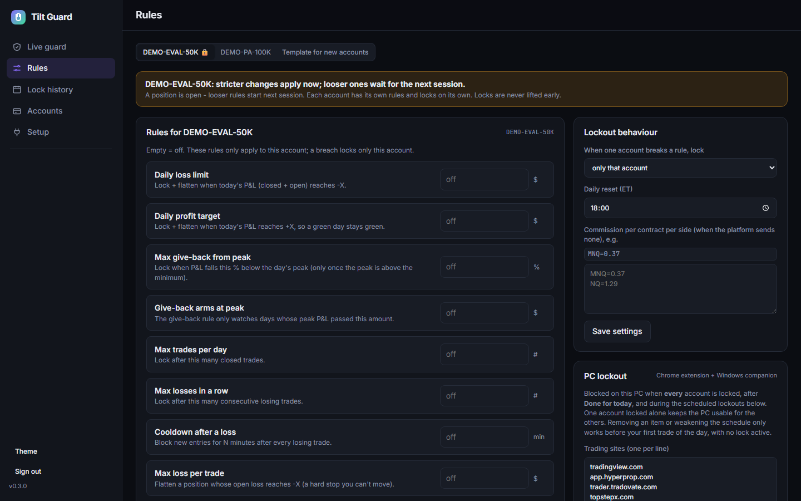
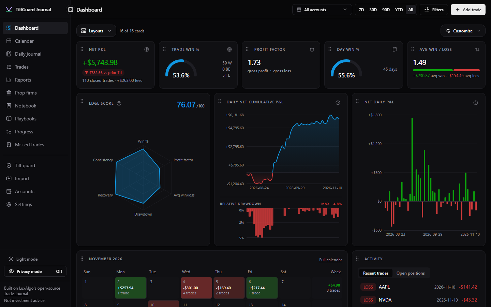
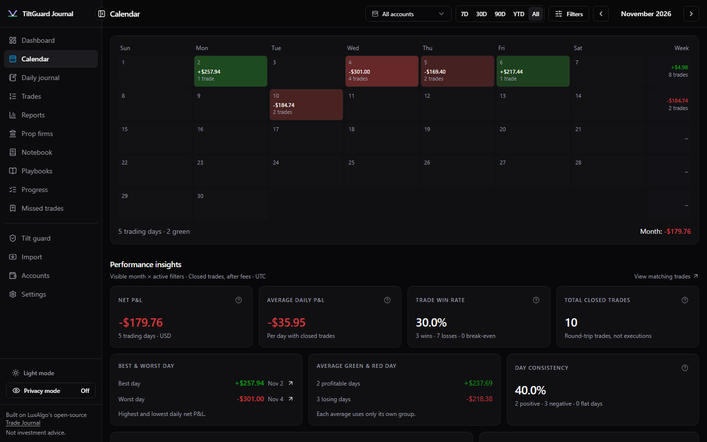
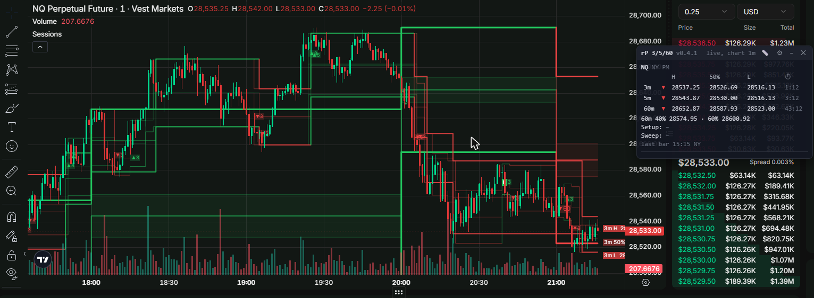

TiltGuard enforces your daily rules for you. Hit your max loss, your profit target or your trade limit, and it blocks new orders, can flatten your positions and takes the trading sites off your PC until the next session.

Live view with demo accounts.
Most blown accounts aren't one bad trade. They're the revenge trades after it. Willpower runs out at the worst moment, so TiltGuard takes the decision away: once a rule trips, there is no "unlock" button until the next session.
Daily loss, profit target, give-back from peak, max trades, losses in a row, cooldown after a loss, max loss per trade, trading window.
New entries are cancelled while locked. Exits always go through, so you're never stuck in a position.
Each prop or personal account has its own rules and its own lock. One bad account doesn't stop the others.
Stricter rule changes apply now; looser ones wait for the next session. Offline? The cached lock still holds.
When a rule trips, the chart is covered with a countdown to the next session, new orders are rejected and closing still works. On Windows, the taskbar widget shows the lock at a glance and has a big "Done for today" button.

Chrome extension: lockout over the chart.

Windows taskbar widget and its flyout.
A small server on your own PC holds your rules and lock state. Your trading platforms report to it, and it tells them what's allowed.
In the TiltGuard dashboard at 127.0.0.1:8940, per account.
The Chrome extension (TradingView/Tradovate, HyperProp) and the NinjaTrader 8 add-on send fills and P&L every few seconds.
The server computes your day: closed + open P&L, trades, streaks, peak, time window.
Entries blocked, positions flattened if the rule says so, trading sites blocked, a notification tells you why.
Locks expire at your daily reset time (18:00 ET by default). Fresh start, same rules.

Per-account rules and PC lockout settings.
A self-hosted trading journal that pairs with TiltGuard: imports from your broker or platform, P&L calendar, edge score, reports, prop-firm tracking and a daily journal. Your data stays in a local database on your machine. Built on LuxAlgo's open-source Trade Journal (MIT); not affiliated with LuxAlgo.


Screenshots use the built-in generated demo data.
The rP range 3/5/60 indicator and the screener, on the charts you actually trade: Vest, NinjaTrader Web, TradingView and more. The 3m / 5m / 60m step lines, 50%, the 60m 40–60% zone, flips and setups are drawn right on the chart from its live bars, with a floating screener next to it. Display only, it never touches your orders.

NQ on Vest, 1m chart, with the rP panel top right.
TradingView, Vest and NinjaTrader Web: full drawing, live. TopstepX: not tested yet, should work. HyperProp: use our native HyperProp script. Tradovate Classic: no lines, use NinjaTrader Web with the same account.
A close beyond the range starts a new one. Setup = 60m 40/50/60% touch, then a 3m / 5m flip in the 60m direction. Sweep = 60m edge taken, flip back inside.
Plain JavaScript, no build step. CUSTOMIZE.md shows where every setting lives and has a prompt you can hand to an AI to change it for you.
No account, no subscription. Everything runs on your own computer.
Private by design: your rules, trades and journal are stored locally on your PC. No telemetry, no tracking, nothing is sent to us. The extension only talks to your local TiltGuard server and to the trading platform you're already logged into; the journal only connects to a broker or AI service if you set one up.
start.cmd (macOS/Linux: ./start.sh). Choose a password; copy the device key it shows.extension folder in chrome://extensions (Developer mode → Load unpacked) and paste the key. For NinjaTrader, see the README.start.cmd (macOS/Linux: ./start.sh). First run installs and builds, then opens localhost:3000.docker compose up -d.TiltGuard and TiltGuard Journal are free and open source under the MIT license. No paywall, no account. Use them, fork them, improve them. Pull requests welcome.